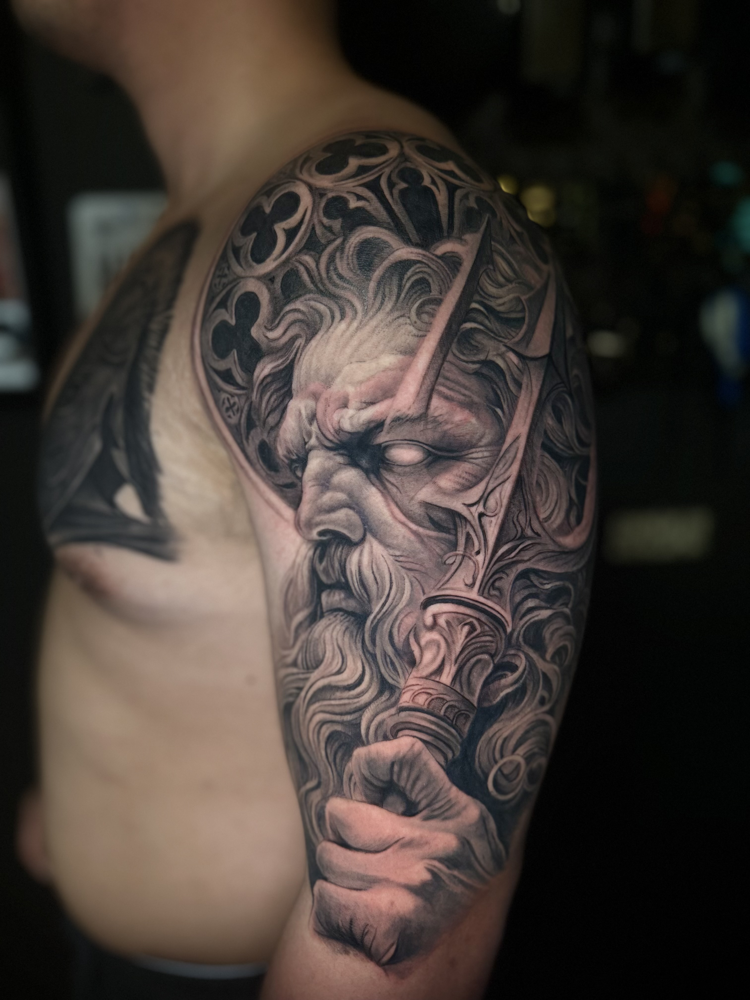
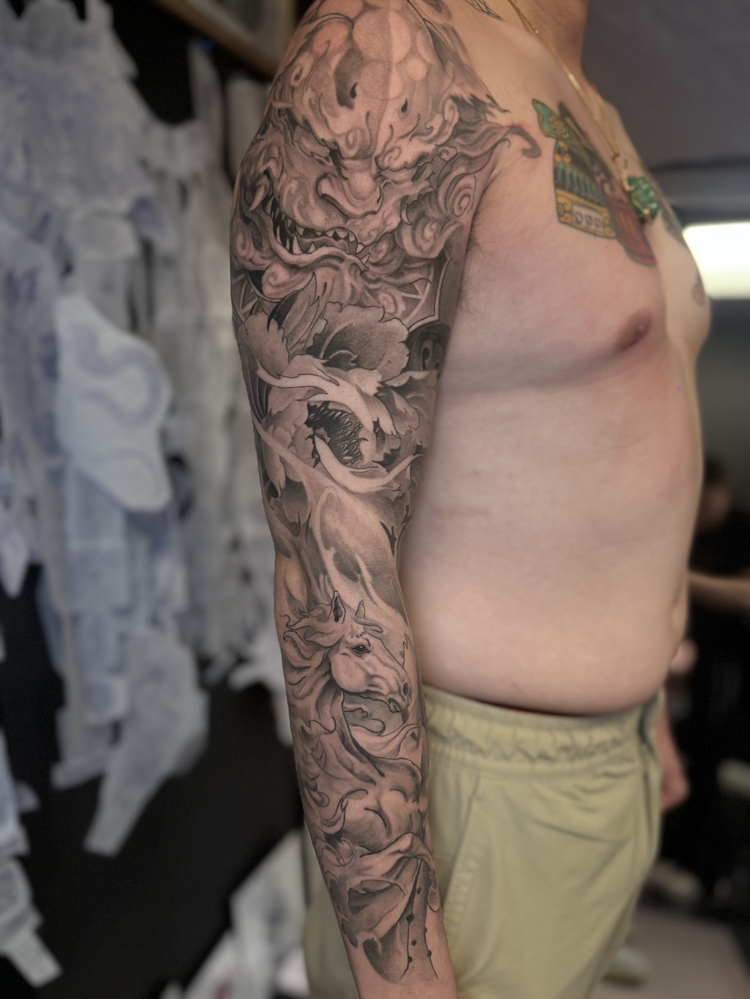
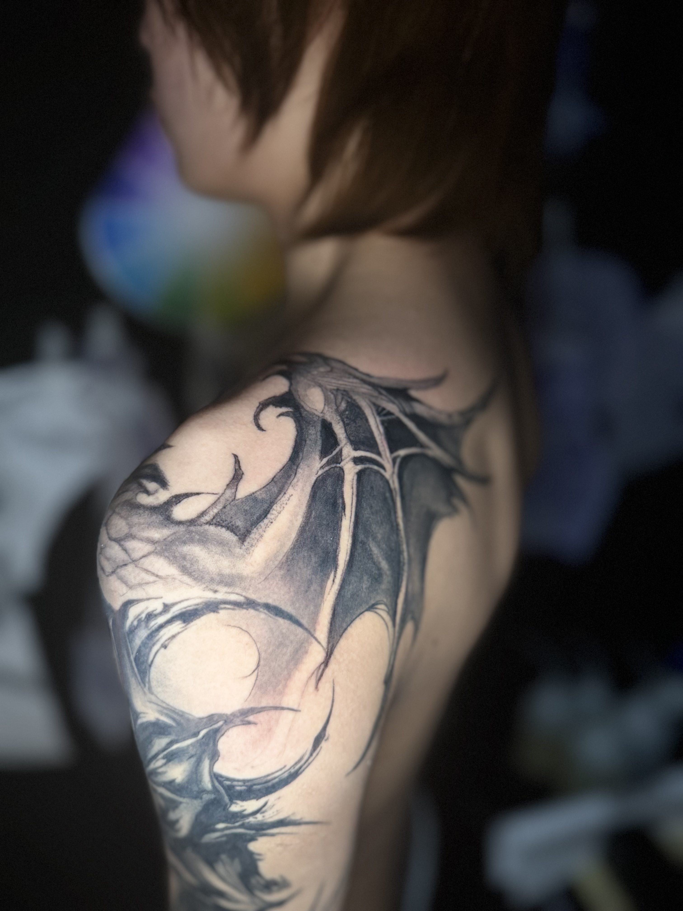
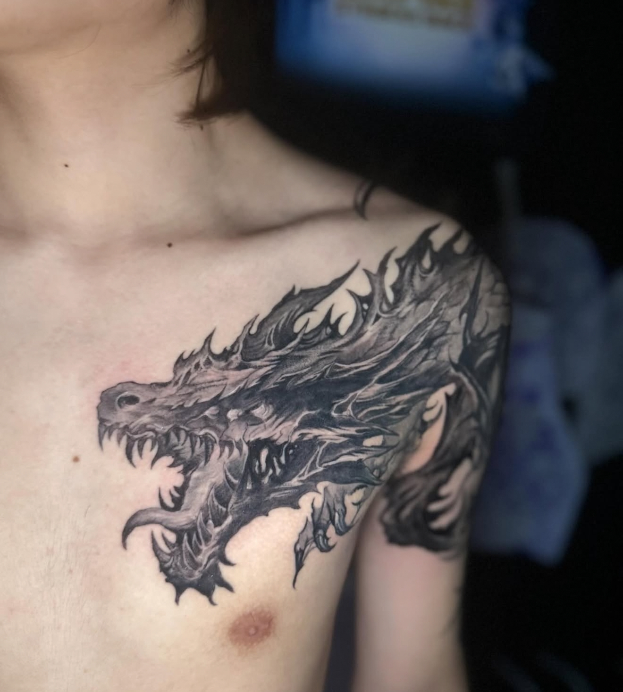
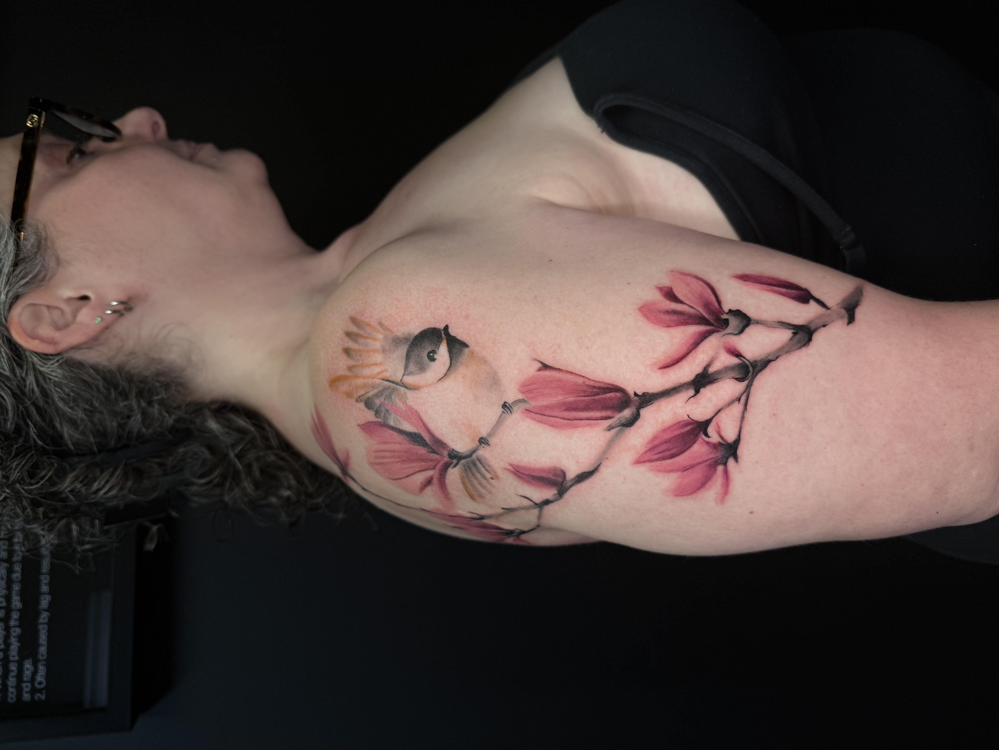
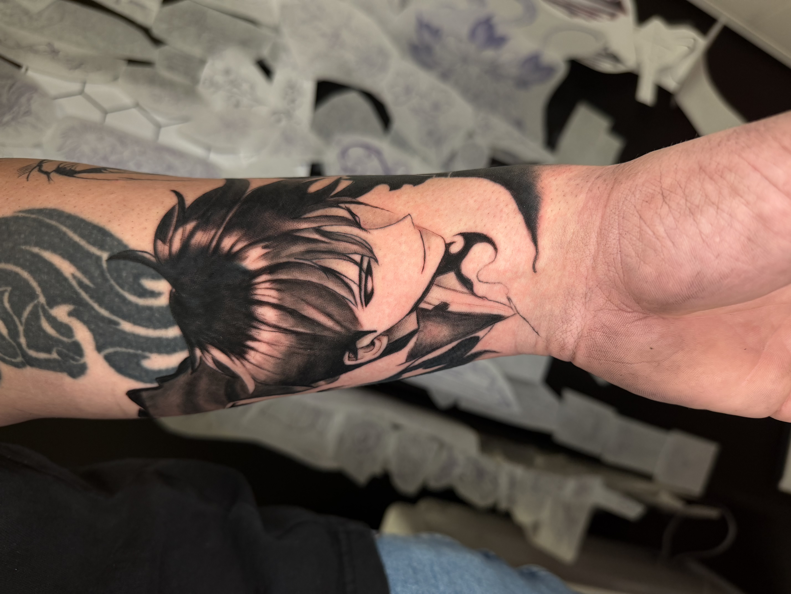
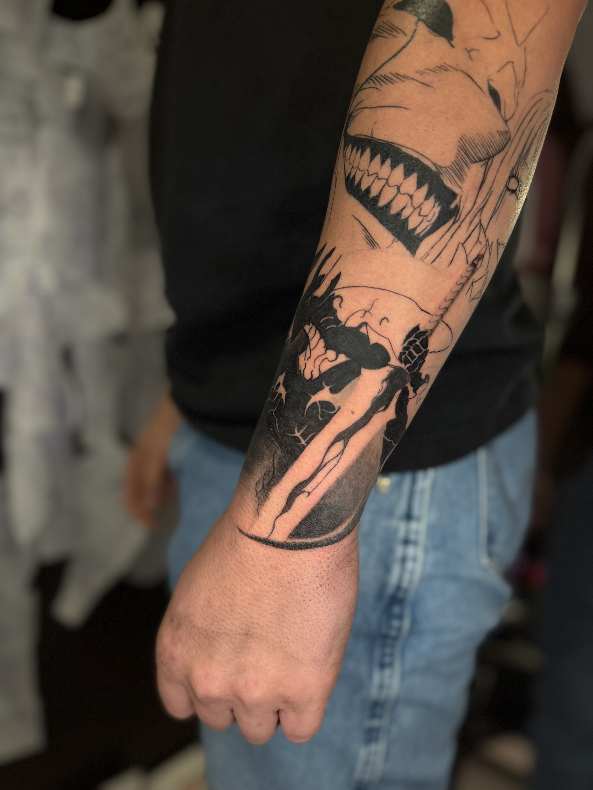
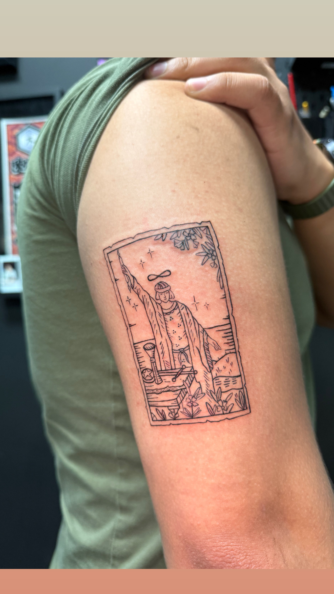

About Nguyen – Tattoo Artist at Horimu Studio
Specializes in:
Neo-Traditional Tattoo
Other Styles:
- Black & Grey Tattoos
Nguyen is a tattoo artist at Horimu Studio specializing in neo-traditional and black & grey tattoo styles. His work emphasizes strong linework, structure, and composition.
He creates bold designs that balance traditional foundations with creative flexibility, ensuring visual impact and clarity.
His tattoos are especially suited for medium to large-scale pieces that flow naturally with the body.
Nguyen’s Tattoo Work







